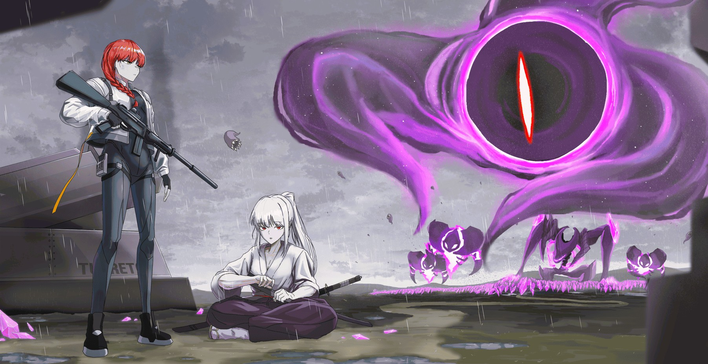

방어선 설계
타워의 배치, 사거리와 적 이동 경로를 결합해 공간 자체가 핵심 전략 자원이 되도록 설계합니다.
04 / TOWER DEFENSE
PROJECT OVERVIEW
De.Co는 제한된 자원으로 방어선을 구축하고 변화하는 적 웨이브에 대응하는 타워디펜스 프로젝트입니다. 타워 배치, 경로 통제, 강화 우선순위가 매 순간 다른 선택을 만들도록 설계합니다.
타워의 배치, 사거리와 적 이동 경로를 결합해 공간 자체가 핵심 전략 자원이 되도록 설계합니다.
적 구성과 등장 순서를 변화시켜 동일한 방어 조합만 반복해서 사용할 수 없도록 구성합니다.
설치, 강화와 재배치 사이의 비용을 조절해 한정된 자원의 우선순위를 판단하게 합니다.
MEDIA GALLERY





VIDEO